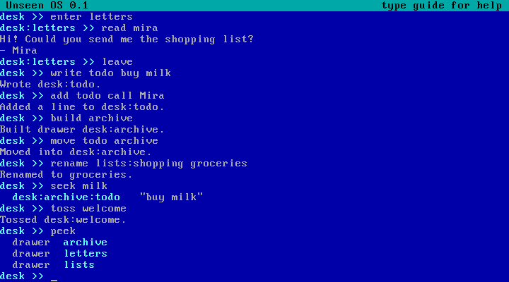
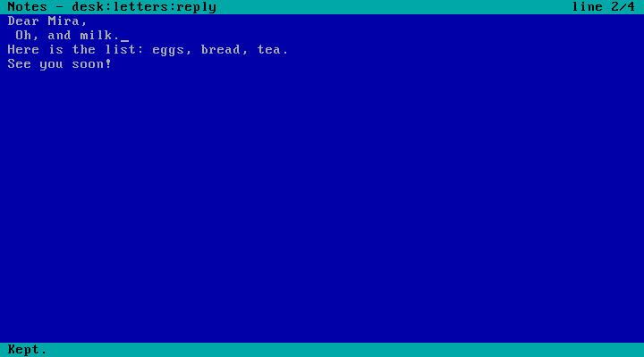
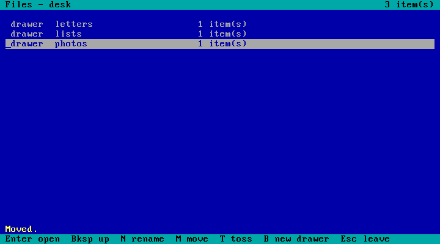

Unseen OS is a 20 KB operating system written from scratch, with its own words for everything. It exists so small AI models can be tested on a machine that is not in their training data, and so we can measure how much a manual helps.
This is the real shell, rebuilt in the page. Click it, type guide and press Enter.
desk:about >>
Every model has read millions of pages about Windows and Linux. None has read one page about this. So when a model works out how to rename a page here, it had to look, not remember.
Size of the whole system
20 KB
Windows is about 1.5 million times larger
Written in
Rust
From the boot code up, no Linux or Windows inside, runs in QEMU
Commands with their own names
20
peek, toss, seek, build, none borrowed from another system
desk:apps >>
Folders are drawers, files are pages, and the top drawer is the desk. The screens below are captured from the OS running in QEMU.

Twenty commands. The prompt always shows which drawer you are in, and an unknown word points you back to guide instead of failing silently.

A text editor. Ctrl+K keeps the page. Leaving with changes warns first, and a second Esc leaves without keeping.

Browse with the arrow keys. N renames, M moves, T tosses, B builds a new drawer. Every action answers with a plain message.
desk:experiment >>
And how much does reading the manual help? The pass rules are written down before any model runs, so the result cannot be bent afterwards.
Like “put the shopping list in Mira’s drawer”. In one condition it also gets the manual.
It types through QEMU’s virtual keyboard and reads the 80 × 25 screen as plain text, the same way a person at the machine would.
Afterwards a hidden channel reads the OS’s files. What the model says it did counts for nothing; only the end state is scored.
qemu-system-x86_64 -kernel unseen.bindesk:progress >>
Two of six phases done since 4 Nov 2026. Each phase has a proof written down before it starts.